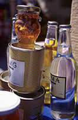

|
|
1) Traditionelle
Küche
In Rhodos gibt es neben einer Vielfalt von
Restaurants, in denen Fischspezialitäten und Fleischgerichte vom Holzkohlegrill serviert werden, die typisch
griechischen Tavernas.
|
Höchst empfehlenswert sind die Mezedes. Sie bestehen
aus vielen unterschiedlichen
Köstlichkeiten, die auf kleinen Tellern angerichtet werden, und zu denen
in der Regel Ouzo (Anisschnaps) serviert wird. Am besten haben uns die
Dolmades, also die mit Lammfleisch und Reis gefüllten Weinblätter geschmeckt,
die in Öl frittiert, aber kalt serviert werden. Silke hat eine
wahre Leidenschaft für diesen Leckerbissen entwickelt! Ausgezeichnet schmecken allerdings auch
Kalamarakia (gegrillter Tintenfisch), Tiropitta (Ziegenkäsepastete), Salata Choriatiki (Bauernsalat, der
aus Tomaten, Gurken, Paprika, Zwiebeln, Oliven und Schaftskäse
bereitet wird) und vieles mehr. |
 |
Im Anschluss an die reichhaltigen Vorspeisen
werden im Hauptgang verschiedene Fischgerichte, vor allem Meerbrassen und Rötlinge, sowie
Grillfleisch serviert. Sie können natürlich auch den Tintenfisch probieren, von dem wir
allerdings nicht sehr begeistert waren. Das Fleisch kommt zumeist in
dünne Scheiben geschnitten auf den Teller.
Zwei griechische
Käsesorten sind echte Gaumenfreuen: Feta (Schafskäse) und Kaseri, ein dem Parmesan ähnlicher Hartkäse.
 |
Als Nachtisch empfehlen wir
die mit viel Honig zubereiteten Kuchen, wie z. B. Pitta me
meli oder Loukoumades. Doch was wäre Griechenland ohne seine berühmte Joghurt,
die mit ein wenig Honig gesüßt einfach himmlisch schmeckt! Ansonsten
können Sie natürlich auch in Feigen und Granatäpfeln schwelgen. |
Das Nationalgetränk
ist einfaches frisches Wasser ohne Kohlensäure. Die Rhodier
trinken jedoch auch gerne einmal ein Glas Wein zum Essen oder erfrischen
sich an einem kühlen Bier in einer Taverne.
Unsere Empfehlungen für Rhodos-Stadt:
| Traditionelle
griechische Gerichte |
CINAXARIA,
17, Aristofanou |
| |
TO STENO,
29, Ag. Anarguiron |
| |
PALIA ISTORIA, Mitropoleos 108 & Dendrinou, in der Neustadt |
| |
METAXIMAS,
Strand von Zephiros |
| |
TONTON, Pytagora, spezialisiert auf Meeresfrüchte, der Inhaber
ist Emmanuel, genannt Tonton! |
| |
|
| Gerichte rund um's
Mittelmeer |
ARALIKI,
45, Aristofanous |
| |
|
| Fisch und Meeresfrüchte |
SEA STAR,
24, Sophokleous |
| |
|
| Internationale
Gerichte |
SPILLO,
41, Apellou (italienisch) |
| |
LE BISTROT
DE L'AUBERGE, 21, Praxitelous (französisch) |
| |
RHOBEL,
13-15 G. Leontos (belgisch-niederländisch) |
| |
CLEO'S,
17, Ag. Fanouriou, (italienisch) |
2)
Nachtleben
Inzwischen ist Ihnen
bestimmt das Wasser im Munde zusammengelaufen. Also wird es das
Beste sein, den Abend mit einer guten Mahlzeit oder einem leichten Imbiss
in einer der belebten Tavernen zu beginnen. Im Anschluss daran empfiehlt
sich ein Spaziergang am Hafen. Wenn Sie etwas griechische Volksmusik und Tanz miterleben möchten, sollten
Sie in einer Weinstube einkehren. Jeden Abend wird im Stadtgarten
eine von Licht und Musik begleitete Vorführung gegeben, bei der die
Belagerung durch Suleiman den Prächtigen in Szene gesetzt wird.
Weitere interessante Theatervorstellungen werden im mittelalterlichen Theater und dem Nationaltheater gegeben.
|